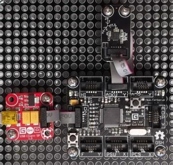

Version: 0.9.0
Gyro is connected as followed on Cerberus:

| Gyro | Mainboard |
|---|---|
| Socket Type I | Socket 2 |
using System;
using System.Diagnostics;
using System.Threading;
using Bauland.Gadgeteer;
using GHIElectronics.TinyCLR.Pins;
namespace TestGyro
{
static class Program
{
private static Gyro _gyro;
static void Main()
{
// Gyro connected on Socket 2 (Type I) of FEZ Cerberus mainboard.
_gyro = new Gyro(FEZCerberus.I2cBus.Socket2);
Debug.WriteLine("Don't move sensor");
_gyro.Calibrate();
Thread.Sleep(1000);
Debug.WriteLine("You can move sensor");
_gyro.MeasurementComplete += Gyro_MeasurementComplete;
_gyro.MeasurementInterval = TimeSpan.FromSeconds(1);
_gyro.StartTakingMeasurements();
while (true)
{
Thread.Sleep(20);
}
}
private static void Gyro_MeasurementComplete(Gyro sender, Gyro.MeasurementCompleteEventArgs e)
{
Debug.WriteLine("Results: Temp.: " + e.Temperature.ToString("F1") + "�C, X: " + e.X.ToString("F1") + ",Y: " + e.Y.ToString("F1") + ",Z: " + e.Z.ToString("F1"));
}
}
}